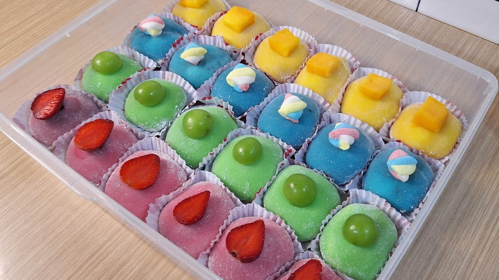

Dari mana asal makanan mochi? Dirangkum berbagai sumber, mochi atau moci adalah kue Jepang yang terbuat dari beras ketan, lalu ditumbuk sampai teksurnya lembut dan lengket, kemudian dibentuk menjadi bulat. Di Jepang, kue mochi ini sering dibuat dan dimakan pada saat perayaan tradisional mochitsuki atau perayaan tahun baru Jepang. Mochi sudah dikenal sejak zaman kuno, sekitar ratusan tahun Masehi. Menurut sejarahnya, mochi awalnya sering dikonsumsi oleh keluarga kaisar Jepang dan kalangan bangsawan karena termasuk makanan istimewa. Selain itu, mochi juga menjadi makanan persembahan wajib dalam upacara adat di Jepang. Seiring berjalannya waktu, pembuatan mochi yang sebelumnya hanya dibuat di rumahan kini berkembang ke pabrik-pabrik dan dibuat dengan teknik lebih modern. Tak hanya dikonsumsi sebagai camilan manis, mochi juga dijadikan hidangan pembuka, pendamping teh, atau hidangan penutup. Saat ini mochi sudah populer di seluruh dunia termasuk Indonesia, Korea, dan negara lain sebagai kudapan yang unik dan enak. Moci (Jepang: 餅, Mochi; Hanzi: (麻糬)) adalah kue Jepang yang terbuat dari beras ketan, ditumbuk sehingga lembut dan lengket, kemudian dibentuk menjadi bulat. Di Jepang, kue ini sering dibuat dan dimakan pada saat perayaan tradisional mochitsuki atau perayaan tahun baru Jepang. Kue ini dijual dan dapat diperoleh dengan mudah di toko-toko kue. Mochi memiliki rasa yang khas, yaitu lembut saat pertama kali dimakan dan lama kelamaan menjadi lengket. Di Indonesia, khususnya kue mochi buatan Kota Sukabumi yang biasa ditemui di jalan Kaswari dan Jalan Ahmad Yani, serta sering dijajakan para pengasong di beberapa titik persimpangan jalan besar di Kota Bogor. Bahan-bahan untuk membuat kue mochi mudah untuk didapatkan. Mochi memerlukan bahan dasar untuk proses pembuatannya, yaitu tepung ketan yang dibentuk bulat dan berisi adonan kacang.